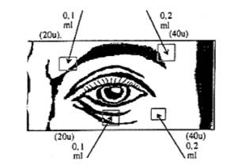

RÉSUMÉ DES CARACTÉRISTIQUES DU PRODUIT
ANSM - Mis à jour le : 13/02/2012
DYSPORT 500 UNITES SPEYWOOD, poudre pour solution injectable
2. COMPOSITION QUALITATIVE ET QUANTITATIVE
Toxine botulinique type A (complexe toxine-hémagglutinine BoTX-A), quantité correspondant à 500 U Speywood* pour un flacon.
*Une unité Speywood correspond à la DL50 chez la souris par voie intrapéritonéale.
Pour la liste complète des excipients, voir rubrique 6.1.
Poudre pour solution injectable.
4.1. Indications thérapeutiques
Adultes
· Blépharospasme,
· Spasme hémifacial,
· Torticolis spasmodique,
· Traitement symptomatique local de la spasticité (hyperactivité musculaire) des membres supérieurs et/ou inférieurs.
Enfants à partir de 2 ans
Traitement symptomatique local de la spasticité des membres inférieurs.
Ce traitement médicamenteux doit être inclus dans une prise en charge globale multidisciplinaire (associant neurologue, pédiatre, médecin de médecine physique et de réadaptation, chirurgien orthopédiste...).
NB: DYSPORT 500 UNITES SPEYWOOD DOIT ETRE ADMINISTRE PAR DES MEDECINS AYANT DEJA UNE BONNE EXPERIENCE DE L'UTILISATION DE LA TOXINE DANS CES INDICATIONS.
4.2. Posologie et mode d'administration
Les doses recommandées de DYSPORT 500 UNITES SPEYWOOD ne sont pas interchangeables avec les autres préparations de toxines botuliniques A. Elles sont exprimées en unités SPEYWOOD (voir rubrique 4.4).
Intervalle minimum entre deux injections:
La présence d'anticorps dirigés contre la toxine botulinique de type A peut réduire l'efficacité du traitement par DYSPORT 500 UNITES SPEYWOOD. En conséquence, par mesure de prudence, un intervalle minimum de temps entre 2 séances d'injections doit être respecté:
· 2 mois dans les indications blépharospasme, spasme hémifacial et torticolis spasmodique chez l'adulte,
· 3 mois dans le traitement symptomatique local de la spasticité (hyperactivité musculaire) des membres supérieurs et/ou inférieur chez l'adulte,
· 3 mois dans le traitement symptomatique local de la spasticité des membres inférieurs chez l'enfant à partir de 2 ans.
· En cas d'antécédents d'atteinte neurogène de la face, et chez les personnes âgées de plus de 70 ans, il est recommandé de réduire la posologie lors de la première injection (voir rubrique 4.4).
Technique d'injection
Voie sous-cutanée ou intramusculaire.
Après désinfection de la peau, la dose de DYSPORT diluée est injectée à l'aide d'une aiguille stérile de calibre adapté au muscle à injecter.
Après reconstitution, DYSPORT ne doit être utilisé que pour une seule séance d'injection pour un seul patient.
Blépharospasme
1°) Préparation du produit
A l'aide d'une aiguille stérile, introduire dans le flacon 2,5 ml d'une solution injectable de chlorure de sodium à 0,9 pour cent (voir rubrique 6.6). On obtient ainsi une solution limpide contenant 200 UNITES SPEYWOOD/ml de substance active.
2°) Posologie et mode d'administration
La dose d'attaque recommandée pour le traitement du blépharospasme bilatéral est de 120 unités par œil (soit 0,6 ml, pour la dilution de 1 flacon de 500 unités dans 2,5 ml).
Voie sous-cutanée.
Le guidage électromyographique n'est pas nécessaire.
Utiliser une seringue de 1 ml et une aiguille de 23 ou 25 gauges.
Injecter une dose de 0,1 ml (20 unités) dans la partie interne et une dose de 0,2 ml (40 unités) dans la partie externe de la jonction entre les zones préseptales et orbitales des muscles orbiculaires supérieurs et inférieurs de chaque œil.
Lors de l'injection dans la paupière supérieure, l'aiguille doit être orientée de telle sorte que l'on évite le centre de la paupière, partie où s'insère le muscle releveur de la paupière.
A TITRE INDICATIF, CONSULTER LE SCHEMA CI-DESSOUS:

Lors des administrations ultérieures, la dose totale par œil pourra être réduite à 80 unités (0,4 ml), c'est-à-dire 20 unités par site d'injection (soit 0,1 ml).
Spasme hémifacial
1°) Préparation du produit
A l'aide d'une aiguille stérile, introduire dans le flacon 2,5 ml d'une solution injectable de chlorure de sodium à 0,9 pour cent (voir rubrique 6.6). On obtient ainsi une solution limpide contenant 200 UNITES SPEYWOOD/ml de substance active.
2°) Posologie et mode d'administration
Les injections se font dans le muscle orbiculaire de l'œil et parfois dans les muscles de la partie inférieure de la face. Les doses initiales recommandées sont de 20 unités (soit 0,1 ml) par site.
Torticolis spasmodique
1°) Préparation du produit
A l'aide d'une aiguille stérile, introduire dans le flacon 1 ml d'une solution injectable de chlorure de sodium à 0,9 pour cent (voir rubrique 6.6). On obtient ainsi une solution limpide contenant 500 UNITES SPEYWOOD/ml de substance active.
2°) Posologie et mode d'administration
La dose initiale recommandée est de 500 unités par patient (soit 1 ml, pour la dilution de 1 flacon de 500 unités dans 1 ml).
Cette dose ne doit jamais excéder 1000 unités par patient et par séance d'injection.
La dose totale doit être répartie entre les 2 ou 3 muscles cervicaux les plus actifs (le plus souvent: sterno-cléido-mastoïdien, splénius, trapèze ou angulaire).
Afin de minimiser le risque de dysphagie, le muscle sterno-cléido-mastoïdien ne doit pas être injecté de façon bilatérale et la dose initiale pour ce muscle ne doit pas dépasser 150 unités (soit 0,3 ml).
Le clinicien est libre de déterminer avec ou sans E.M.G., les muscles les plus actifs, et le nombre de sites à injecter par muscle.
Pour chaque muscle, la dose sera répartie en 2 ou 3 sites.
Les séances d'injection doivent être répétées en fonction de la durée de l'effet clinique. Elles seront toujours espacées d'au moins 2 mois.
Traitement symptomatique local de la spasticité des membres supérieurs et/ou inférieurs chez l'adulte
1°) Préparation du produit
A l'aide d'une aiguille stérile, introduire dans le flacon 1 ml ou 2,5 ml (fonction du volume du muscle cible) d'une solution injectable de chlorure de sodium à 0,9 pour cent (voir rubrique 6.6). On obtient ainsi une solution limpide contenant 500 OU 200 UNITES SPEYWOOD/ml de substance active.
2°) Posologie et mode d'administration
Posologie
La posologie exacte, le volume de dilution et le nombre de sites d'injection doivent être adaptés à chaque individu d'après la taille, le nombre et l'emplacement des muscles impliqués, la sévérité de la spasticité, la présence d'une faiblesse musculaire localisée et la réponse du patient au traitement précédent.
La dose initiale recommandée est de 1000 unités par patient.
Cette dose ne doit jamais excéder 1500 unités par patient et par séance d'injection.
La dose totale doit être répartie dans les différents muscles à injecter, en général: Flexor digitorum profundus (fléchisseur profond des doigts), Flexor digitorum superficialis (fléchisseur superficiel des doigts), Flexor carpi ulnaris (cubital antérieur), Flexor carpi radialis (grand palmaire), Biceps brachii (biceps brachial), Gastrocnemius (gastrocnémien), Soleus (soléaire), Tibialis posterior (jambier postérieur), Flexor digitorum longus (fléchisseur commun des orteils), Adductor (adducteurs).
En respectant une dose totale de 1500 unités: la répartition recommandée de la dose par muscle est donnée dans le tableau suivant:
|
Muscle |
Dose1 par muscle (unité SPEYWOOD): Nombre de sites2 d'injection par muscle |
|
|
Biceps brachii (biceps brachial) |
300-400: 2 sites |
|
|
Flexor digitorum profundus (fléchisseur profond des doigts) |
150: 1 site |
|
|
Flexor digitorum superficialis (fléchisseur superficiel des doigts) |
150-250: 1 site |
|
|
Flexor carpi ulnaris (cubital antérieur) |
150: 1 site |
|
|
Flexor carpi radialis (grand palmaire) |
150: 1 site |
|
|
Gastrocnemius (gastrocnémien) |
250-750: 1 à 2 sites |
|
|
Soleus (soléaire) |
250-750: 1 à 2 sites |
|
|
Tibialis posterior (jambier postérieur) |
200-350: 1 à 2 sites |
|
|
Flexor digitorum longus (fléchisseur commun des orteils) |
150-300: 1 à 2 sites |
|
|
Adductor (adducteurs) |
500-1 500: 1 à 2 sites |
1 Il conviendra d'utiliser une dose initiale moindre pour éviter l'apparition d'une faiblesse musculaire excessive des muscles concernés, par exemple chez les patients dont les muscles à traiter sont peu développés ou encore chez les patients qui nécessitent une injection concomitante dans un autre groupe musculaire.
2 Le nombre de sites dépend du volume du muscle injecté.
Mode d'administration
Utiliser une seringue de 1 ml ou de 5 ml en fonction du volume total à injecter (aiguille de 23 à 25 gauges).
Le site d'injection sera déterminé soit par guidage électromyographique (notamment pour les muscles profonds), soit grâce à un repérage par stimulo-détection musculaire.
Toutefois, en raison de la difficulté technique du guidage électromyographique, l'injection du jambier postérieur nécessite une formation et une compétence particulière du médecin injecteur.
L'amélioration clinique survient généralement au cours des deux semaines qui suivent la séance d'injections.
Les séances d'injections pourront être répétées si besoin mais seront toujours espacées d'au moins 3 mois.
Lors d'une nouvelle séance d'injection, l'intensité et le type de spasticité musculaire peuvent conduire à modifier la dose de DYSPORT 500 UNITES SPEYWOOD et le choix des muscles à injecter.
TRAITEMENT SYMPTOMATIQUE LOCAL DE LA SPASTICITE DES MEMBRES INFERIEURS CHEZ L'ENFANT A PARTIR DE 2 ANS
1°) Préparation du produit
A l'aide d'une aiguille stérile, introduire dans le flacon 1 ml d'une solution injectable de chlorure de sodium à 0,9 pour cent (voir rubrique 6.6). On obtient ainsi une solution limpide contenant 500 UNITES SPEYWOOD/ml de substance active.
2°) Posologie et mode d'administration
Posologie
Le traitement doit être adapté en fonction de l'état clinique de chaque patient.
Chez les enfants recevant une injection du produit pour la première fois, il conviendra d'être prudent, la dose initiale ne devant pas dépasser 10 unités/kg en cas d'injections unilatérales, et 20 unités /kg en cas d'injections bilatérales (sans dépasser une dose totale de 1000 unités/patient). La dose doit être répartie entre les différents muscles spastiques du membre inférieur (par exemple, les muscles du mollet, les ischio-jambiers ou les adducteurs de la hanche).
En cas d'injection des seuls muscles jumeaux, la posologie initiale recommandée est de 5 Unités/kg de poids, dans chacun des deux chefs musculaires du muscle gastrocnemius (jumeaux).
La posologie exacte et le nombre de sites d'injections doivent être adaptés à chaque individu d'après la taille, le nombre et l'emplacement des muscles impliqués, la sévérité de la spasticité et la présence d'une faiblesse musculaire localisée.
La posologie devra être réduite chez les enfants:
· présentant des comorbidités associées notamment celles avec troubles de déglutition ou respiratoire préexistant,
· dont les muscles à traiter sont peu développés,
· qui nécessitent une injection multisite,
· qui bénéficient d'injections sous anesthésie générale.
Dans tous les cas, lors du choix de la dose, une évaluation individuelle du rapport bénéfice/risque devra être envisagée, afin de réduire le risque d'effets indésirables notamment le risque de diffusion de la toxine à distance du site d'administration (voir rubriques 4.4 et 4.8).
Lors des séances suivantes, la dose utilisée devra être adaptée avec une extrême précaution, en fonction de la réponse au traitement précédent sans dépasser 15 unités/kg en cas d'injections unilatérales, et jusqu'à une dose totale maximale de 30 unités/kg en cas d'injections bilatérales (sans dépasser 1 000 unités par patient).
La dose totale administrée au cours d'une séance d'injections ne doit jamais dépasser 1 000 unités ou 30 unités/kg (la plus faible de ces 2 doses).
Le tableau ci-dessous fournit des directives pour l'injection de DYSPORT dans le traitement de la spasticité chez les enfants âgés 2 ans et plus:
|
Muscle |
Dose par muscle (unité SPEYWOOD) |
Dose maximale par session |
|
|
Gastrocnemius (gastrocnémien), soleus (soléaire) et tibialis posterior (jambier postérieur) |
3 à 15 U/kg |
1ere séance: · injection unilatérale: 10 U/kg · injection bilatérale: 20 U/kg Séances suivantes: · injection unilatérale:15 U/kg · injection bilatérale: 30 U/kg ou 1000 unités par patient ou 250 unités par site d'injection |
|
|
Biceps femoris, semitendinosus, semimembranosus, sartorius (Ischiojambiers et sartorius) |
3 à 15 U/kg |
||
|
adductor magnus / longus / brevis (adducteurs) |
3 à 15 U/kg |
||
|
Rectus femoris, vastus medialis, vastus inermedius, vastus lateris (quadriceps) |
3 à 15 U/kg |
Mode d'administration
L'administration s'effectue par voie intramusculaire en 1 ou 2 points d'injection par muscle du membre inférieur spastique.
Le guidage électromyographique doit être utilisé pour repérer les muscles les plus actifs.
L'amélioration clinique survient généralement au cours des deux semaines qui suivent la séance d'injections.
Les séances d'injection doivent être répétées en fonction de la durée de l'effet clinique. Elles seront toujours espacées d'au moins 3 mois.
Myasthénie,
Allaitement (voir rubrique 4.6).
4.4. Mises en garde spéciales et précautions d'emploi
Il est impératif que DYSPORT ne soit utilisé que pour le traitement d'un seul patient, au cours d'une seule séance.
|
La concentration de la solution reconstituée de Dysport est exprimée en Unités Speywood. |
|
Etant donné l'absence d'harmonisation des systèmes d'unités pour les différentes toxines botuliniques commercialisées, il est nécessaire de faire preuve d'une extrême prudence au cas où le passage d'une toxine botulinique d'un laboratoire pharmaceutique à la toxine botulinique d'un autre laboratoire pharmaceutique s'avérait nécessaire. |
Recommandations pour la reconstitution du produit
La préparation du produit doit être réalisée dans un local approprié et par du personnel expérimenté (voir rubrique 6.6).
Recommandations en cas d'incident lors de la manipulation de la toxine botulinique
La toxine est fournie et doit être utilisée à des doses thérapeutiques. Chaque ampoule correspond à une dose inférieure au 1/200e de la dose létale par voie parentérale chez l'homme. En cas d'incident lors d'une manipulation du produit qu'il soit à l'état lyophilisé ou reconstitué, des mesures appropriées doivent être prises (voir rubrique 6.6).
L'injection doit être réalisée par un médecin ayant une bonne expérience de l'utilisation de la toxine botulinique dans les indications prévues par l'autorisation de mise sur le marché
Possibilité de formation d'anticorps dirigés contre la toxine botulinique et donc de résistance au traitement (voir rubrique 4.2).
Il est recommandé d'utiliser des doses inférieures aux doses standard pour le traitement des patients de plus de 70 ans.
L'existence d'antécédents d'atteinte neurogène de la face (paralysie faciale, polyradiculonévrite) nécessite, lors de la première injection, d'utiliser des doses égales au quart de la dose recommandée (voir rubrique 4.2).
Les patients souffrant de blépharospasme peuvent avoir été sédentaires pendant un très long moment. En conséquence, lors d'un traitement par la toxine botulinique, il est nécessaire de leur conseiller une reprise d'activité progressive.
La diminution du clignement due à l'injection de la toxine botulinique dans le muscle orbiculaire peut conduire à une exposition prolongée de la cornée, à une lésion épithéliale persistante et à une ulcération de la cornée en particulier chez les patients ayant présenté une paralysie faciale. Dans ce cas, des mesures préventives et curatives doivent être prises.
Des effets indésirables, liés à la diffusion de la toxine à distance du site d'administration, ont été rapportés (voir rubrique 4.8), ayant conduit à de très rares cas de décès suite parfois à une dysphagie, une pneumopathie d'inhalation et/ou chez des patients ayant une asthénie significative.
Les patients traités à dose thérapeutique peuvent présenter une faiblesse musculaire excessive. Les patients souffrant de troubles neurologiques incluant des difficultés de déglutition sont plus à risque de présenter ces effets. Chez ces patients, le traitement devra être utilisé sous le contrôle d'un médecin spécialiste et uniquement si le bénéfice du traitement l'emporte sur le risque.
Les patients ayant des antécédents de dysphagie et de pneumopathie d'inhalation doivent être traités avec la plus grande précaution.
Les patients et leur entourage doivent être avertis de la nécessité d'une prise en charge médicale immédiate en cas de troubles de la déglutition, de troubles du langage ou de troubles respiratoires.
Dans la déformation dynamique du pied en équin chez les enfants présentant une infirmité motrice cérébrale, une évaluation fonctionnelle initiale précise doit être effectuée en milieu spécialisé. Elle permet:
· d'évaluer la pertinence de l'indication:
o spasticité prédominante,
o absence de faiblesse musculaire parfois masquée par l'hypertonie. Cette faiblesse pourrait être aggravée par une injection de toxine botulinique,
o absence de rétraction fixée importante ou de cicatrice post-chirurgicale rendant inutile une injection de toxine botulinique.
· de déterminer les différentes composantes du traitement (kinésithérapie, port d'attelles…),
· d'adapter le traitement en fonction de l'évolution clinique.
4.5. Interactions avec d'autres médicaments et autres formes d'interactions
+ Aminoglycosides
Risque d'augmentation des effets de la toxine botulinique avec les aminosides (par extrapolation à partir des effets observés au cours du botulisme).
Utiliser un autre antibiotique.
Il n'y a pas de données fiables de tératogénèse chez l'animal.
En clinique, il n'existe pas actuellement de données suffisamment pertinentes pour évaluer un éventuel effet malformatif ou fœtotoxique de la toxine botulinique lorsqu'elle est administrée pendant la grossesse.
En conséquence, l'utilisation de la toxine botulinique est déconseillée pendant la grossesse. Cet élément ne constitue pas l'argument pour conseiller une interruption systématique de grossesse mais conduit à une attitude de prudence et à une surveillance prénatale soigneuse.
L'innocuité de l'utilisation de la toxine botulinique chez la femme allaitante n'a pas été démontrée. En conséquence, l'allaitement est contre-indiqué pendant le traitement.
4.7. Effets sur l'aptitude à conduire des véhicules et à utiliser des machines
L'attention est attirée, notamment chez les conducteurs de véhicules et les utilisateurs de machines, sur les risques d'asthénie et de faiblesse musculaire liés à l'emploi de ce médicament, pouvant rendre dangereuse la conduite de véhicules ou l'utilisation de machines.
Effets indésirables indépendants du site d'injection ou de l'indication:
· Des effets indésirables liés à la diffusion de la toxine, à distance du site d'injection ont été très rarement rapportés (faiblesse musculaire excessive, dysphagie, pneumopathie d'inhalation, pouvant être fatales) (voir rubrique 4.4).
· Rares réactions allergiques générales (rash, érythème, prurit).
· Douleurs/brûlures au point d'injection, possibles quels que soient le site injecté ou l'indication.
Dans le traitement du blépharospasme et du spasme hémifacial
· La diffusion au muscle releveur de la paupière peut entraîner un ptosis partiel ou complet, transitoire, d'une durée de 6 à 8 semaines.
· La diffusion aux muscles oculo-moteurs peut entraîner une diplopie transitoire.
· Autres effets secondaires locaux possibles et de courte durée: sécheresse oculaire, larmoiement, gonflement des paupières, photophobie, kératite (voir rubrique 4.4).
· Risque de survenue de paralysie faciale.
Dans le traitement du spasme hémifacial
Lorsque les patients reçoivent une injection dans le muscle releveur de la commissure labiale en plus des injections pratiquées autour de la fente palpébrale, une chute de la commissure labiale est possible.
Dans le traitement du torticolis spasmodique, particulièrement en cas d'injection du sterno-cléido-mastoïdien, peuvent apparaître:
· une dysphagie, parfois sévère, avec possibilité de fausses routes pendant 2 à 4 semaines, et risque de pneumopathie d'inhalation,
· une dysphonie,
· une diminution de la force des muscles du cou.
Dans le traitement symptomatique local de la spasticité (hyperactivité musculaire) des membres supérieurs et/ou inférieurs chez l'adulte
Dans les études cliniques, l'intensité des effets indésirables liés au traitement est faible à modérée. Les effets indésirables sont transitoires et surviennent principalement dans les premières semaines suivant l'injection.
En dehors d'une réaction locale douloureuse, l'effet indésirable le plus fréquemment rapporté au cours des essais cliniques est une faiblesse musculaire loco-régionale et plus rarement à distance du point d'injection, correspondant à une diffusion loco-régionale ou systémique de la toxine botulinique. Cette diffusion semble d'autant plus fréquente que la dose totale injectée est importante.
La faiblesse musculaire localisée correspond à l'action pharmacologique attendue après injection de toxine botulinique.
Des symptômes grippaux, des états de fatigue et de somnolence ont également été rapportés, ainsi qu'une douleur au point d'injection.
Ces effets disparaissent généralement en moins de deux semaines.
Dans le traitement symptomatique local de la spasticité des membres inférieurs chez l'enfant à partir de 2 ans
Dans les études cliniques, la plupart des effets indésirables liés au traitement ont été d'intensité légère à modérée.
Les effets indésirables sont classés par Système Organe Classe et par fréquence en utilisant les catégories suivantes: très fréquent (≥ 1/10), fréquent (≥ 1/100 à < 1/10), peu fréquent (≥ 1/1 000 à < 1/100), rare (≥ 1/10 000 à < 1/1 000), très rare (< 1/10 000), fréquence indéterminée (ne peut être estimée sur la base des données disponibles).
|
Système Organe Classe |
Fréquence: effet indésirable. |
|
|
Affections gastro-intestinales |
Fréquent: diarrhée. |
|
|
Affections musculo-squelettiques et systémiques |
Fréquent: faiblesse musculaire. |
|
|
Affections du rein et des voies urinaires |
Fréquent: incontinence urinaire. |
|
|
Troubles généraux et anomalies au site d'administration |
Fréquent: anomalie de la marche, asthénie, syndrome grippal, douleur au point d'injection. |
|
|
Lésions, intoxications et complications liées aux procédures |
Fréquent: chute. |
Les blessures accidentelles dues à une chute et les anomalies de la marche peuvent être dues à une faiblesse excessive du muscle traité et/ou à une diffusion locale de DYSPORT au niveau des autres muscles impliqués dans la marche et l'équilibre.
Depuis la mise sur le marché, des cas possibles de diffusion de la toxine ont été rapportés chez des enfants présentant des troubles associés à une infirmité motrice cérébrale. Généralement, la dose utilisée dans ces cas était au-dessus de celle recommandée (voir rubrique 4.2).
Des doses locales excessives de toxine botulinique peuvent provoquer, par diffusion à distance de la zone traitée, l'apparition ou la majoration des effets indésirables connus (voir rubrique 4.8).
Il n'existe pas d'antidote. Il conviendra d'avoir recours à un traitement symptomatique si nécessaire.
5. PROPRIETES PHARMACOLOGIQUES
5.1. Propriétés pharmacodynamiques
AUTRES MYORELAXANTS A ACTION PERIPHERIQUE, Code ATC:M03AX01
La toxine botulinique A est produite par Clostridium botulinum.
Elle bloque la libération d'acétylcholine dans la jonction neuro-musculaire, entraînant une dégénérescence des terminaisons nerveuses et donc une paralysie.
Ce blocage est définitif, mais l'existence de phénomènes de repousse axonale explique le caractère réversible des paralysies induites par les injections de toxine.
5.2. Propriétés pharmacocinétiques
L'effet clinique apparaît 48 heures après l'injection. Il est maximum 8 à 15 jours plus tard. La durée d'action varie entre 2 et 6 mois.
5.3. Données de sécurité préclinique
Sans objet.
Solution d'albumine humaine à 20 %, lactose monohydraté.
En l'absence d'étude de compatibilité ce médicament ne doit pas être mélangé avec d'autres médicaments.
2 ans.
Après reconstitution, une utilisation immédiate est recommandée. Toutefois, la stabilité physico-chimique de la solution a été démontrée pendant 4 heures entre + 2° C et + 8° C.
6.4. Précautions particulières de conservation
A conserver (entre + 2° C et 8° C) au réfrigérateur.
Ne pas congeler.
6.5. Nature et contenu de l'emballage extérieur
Poudre pour solution injectable en flacon (verre type I), muni d'un bouchon (halobutyl); boîte de 1.
6.6. Précautions particulières d’élimination et de manipulation
Il est impératif que DYSPORT ne soit utilisé que pour le traitement d'un seul patient, au cours d'une séance seule.
· La préparation du produit doit être réalisée dans un local approprié et par du personnel expérimenté afin de minimiser le risque d'incident lors de la manipulation.
· Pour reconstituer DYSPORT 500 UNITES SPEYWOOD, utiliser une solution injectable de chlorure de sodium à 0,9 pour cent.
· Aspirer une quantité de solvant adaptée à la dilution souhaitée dans une seringue de taille adéquate.
· Après avoir nettoyé à l'alcool la partie centrale du bouchon en caoutchouc, introduire lentement ce solvant dans le flacon à température ambiante et mélanger doucement pour en dissoudre le contenu, en évitant la formation de bulles susceptibles de dénaturer le produit.
· On obtient ainsi une solution reconstituée limpide à la concentration souhaitée: exprimée en UNITES SPEYWOOD.
Toute fraction de solution restante doit être éliminée de manière appropriée.
Recommandations en cas d'incident lors de la manipulation de la toxine botulinique
La toxine est fournie et doit être utilisée à des doses thérapeutiques. Chaque ampoule correspond à une dose inférieure au 1/200e de la dose léthale par voie parentérale chez l'homme. En cas d'incident lors d'une manipulation du produit qu'il soit à l'état lyophilisé ou reconstitué, les mesures appropriées décrites ci-dessous doivent être mises en route immédiatement.
La toxine botulinique est très sensible à la chaleur et à certains agents chimiques.
Toute projection doit être essuyée:
· soit avec un matériel absorbant imbibé d'une solution d'hypochlorite de sodium (eau de Javel) en cas de produit lyophilisé,
· soit avec un matériel absorbant sec en cas de produit reconstitué.
Les surfaces contaminées seront nettoyées avec un matériel absorbant imbibé d'une solution d'hypochlorite de sodium (eau de Javel), puis séchées.
En cas de bris de flacon, procéder comme indiqué ci-dessus, ramasser soigneusement les particules de verre et essuyer le produit, en évitant les coupures cutanées.
En cas de projection cutanée, laver avec une solution d'hypochlorite de sodium (eau de Javel) puis rincer abondamment à l'eau.
En cas de projection oculaire, rincer abondamment avec de l'eau ou avec une solution ophtalmique de rinçage oculaire.
En cas de blessure du manipulateur (coupure, autopiqûre), procéder comme ci-dessus et prendre les mesures médicales appropriées en fonction de la dose injectée.
Recommandation pour l'élimina tion du matériel contaminé
· Les aiguilles, les seringues et les flacons qui ne doivent pas être vidés, seront placés après usage, dans des containers adaptés qui devront être incinérés.
· Le matériel contaminé (tissu absorbant, gants, débris d'ampoule) doit être placé dans un sac intraversable et éliminé par incinération.
7. TITULAIRE DE L’AUTORISATION DE MISE SUR LE MARCHE
IPSEN PHARMA
65, quai Georges Gorse
92100 BOULOGNE BILLANCOURT
8. NUMERO(S) D’AUTORISATION DE MISE SUR LE MARCHE
· 558 105-9: Poudre pour solution injectable en flacon (verre type I), muni d'un bouchon (halobutyl); boîte de 1.
9. DATE DE PREMIERE AUTORISATION/DE RENOUVELLEMENT DE L’AUTORISATION
[à compléter par le titulaire]
10. DATE DE MISE A JOUR DU TEXTE
[à compléter par le titulaire]
Sans objet.
12. INSTRUCTIONS POUR LA PREPARATION DES RADIOPHARMACEUTIQUES
Sans objet.
Liste I.
Réservé à l'usage hospitalier.